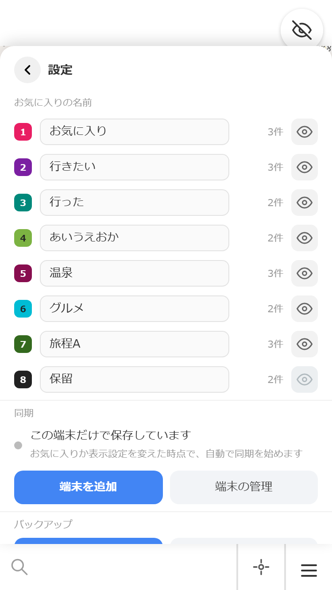
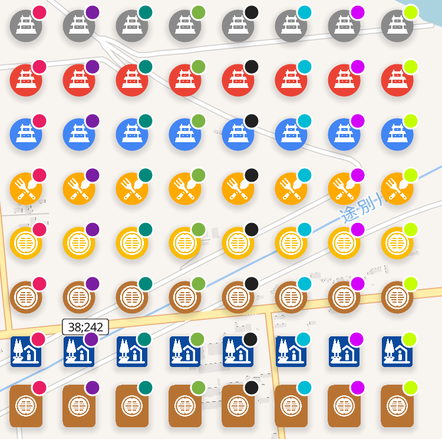
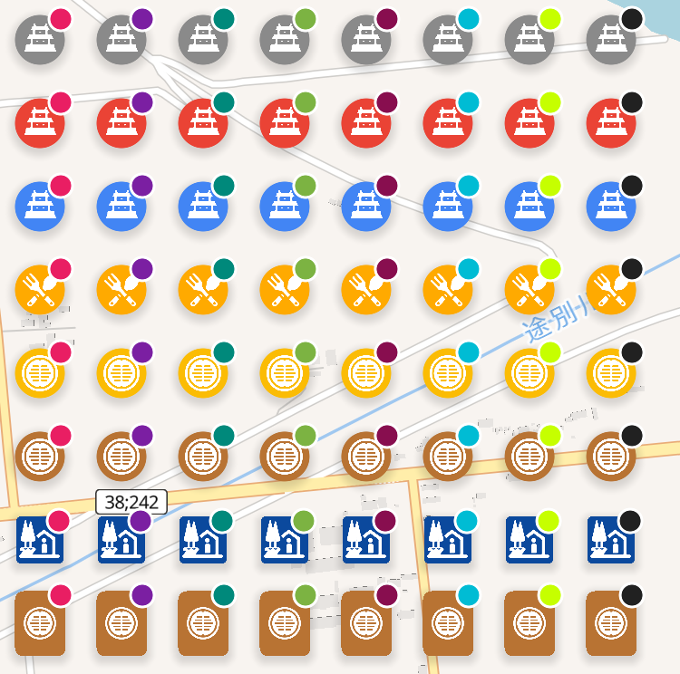
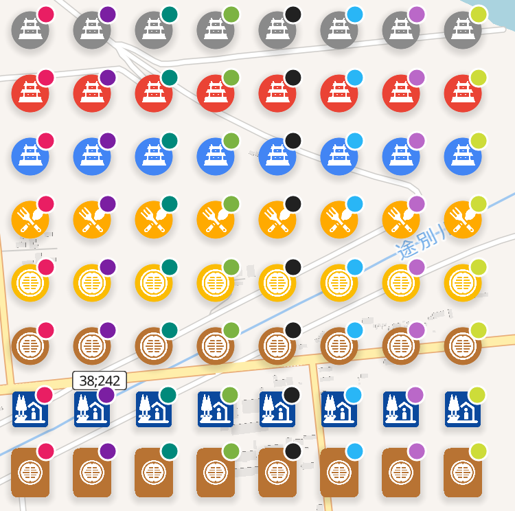
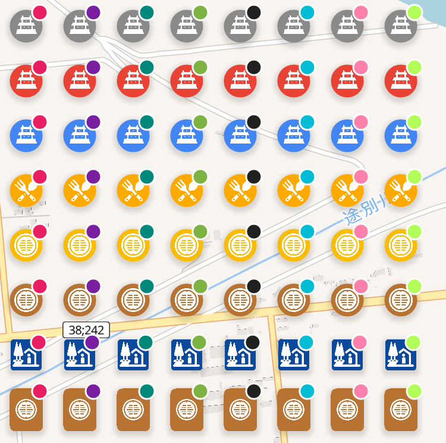
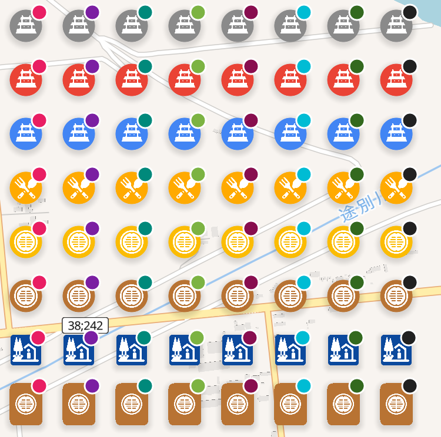

画面はすべて実アプリを iPhone SE3 の 375×667 で開いて撮ったもので、端末枠の中は実寸です（2倍の解像度で撮り、CSS px の寸法で置いています）。
枠を8つに広げたのは撮影のときだけの試作で、FAV_SLOTS と色をページの中で書き足し、5〜8枠のピンのレイヤーも同じ形で足しています。
アプリのコードは変えていません。二段構えと設定の案は、実アプリの部品（.nearby-item・.lords-head・.favname-row・.fxp-btn）をそのまま使って並べ替えています。
撮り直しは python -I mock/fav8-preview/capture8.py . mock/fav8-preview で行えます。
いまの作りのまま8枠にすると、絞り込みのチップが3段になり（名前が6文字なら4段）、一覧の始まりが下がります。 二段構えでは、一段目に枠の一覧を出し、押した枠の中身を二段目に出します。二段目にはチップが無いので、一覧はいまの4枠のときより上から始まります。 「すべて」は一段目のいちばん上に残します（書き出しと選択モードの一括解除が「すべて」か1つの枠かで対象を決めているため）。 選択と書き出しのボタンは二段目にだけ置きます。
| 状態 | チップの高さ | 一覧の始まり（y） | 一覧の高さ |
|---|---|---|---|
| 現行・4枠 | 56px | 272px | 343px |
| 現行のまま8枠（上の画面） | 87px | 303px | 312px |
| 案・二段目 | — | 209px | 406px |
値はすべて上の画面を撮ったときに getBoundingClientRect で計ったものです。
パレットは一覧とは別の部品なので、二段構えにしても大きさは変わりません。いまの1列のままだと高さが282pxになり、シートの「食べログ」などのボタンに重なります。 2列×4段にすると266×146pxで、いまの4枠のパレット（144×146px）と同じ高さに収まります。位置はいまと同じ決め方（★の右端に揃え、下に入れば下へ）のままです。


いまの作りのまま8行にすると、区画の高さは323px（4行のときは163px）になります。 案では、設定には色の点を並べたボタンを1つだけ置き、押した先の画面で名前と「薄く出す」を編集します。押した先の行はいまの行そのままです。 ボタンの形は、同じ設定画面の「同期」「バックアップ」のボタン（高さ38px）に揃えています。



左から枠1〜8の順に並べています。1〜4はいまの色、5〜8が足す色の案です。 行はピンの種類（上から お城・続100名城・100名城・食べログ・ポケふた・マンホール蓋・道の駅・マンホールカード）で、 印は実アプリの地図に描かせたものです（並びを作るためにピンの位置だけ置き換えています。印とピンの描き方はアプリのレイヤーそのままです）。 各案の下の帯は、8枠すべてに入れたときの情報シート上端の線（8等分）です。 各案の短い説明は、私が画像を見た印象です。




